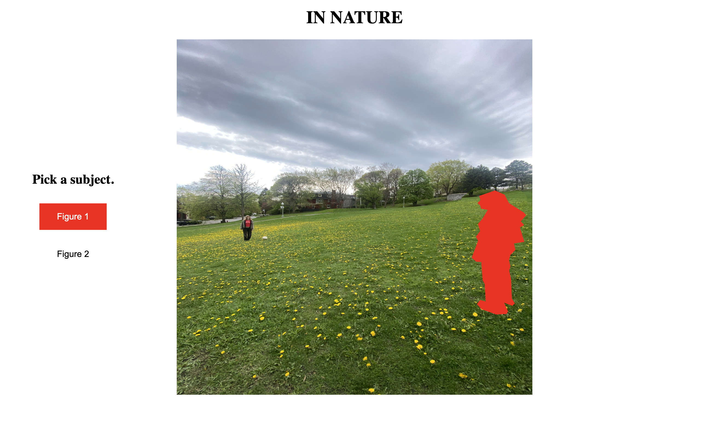
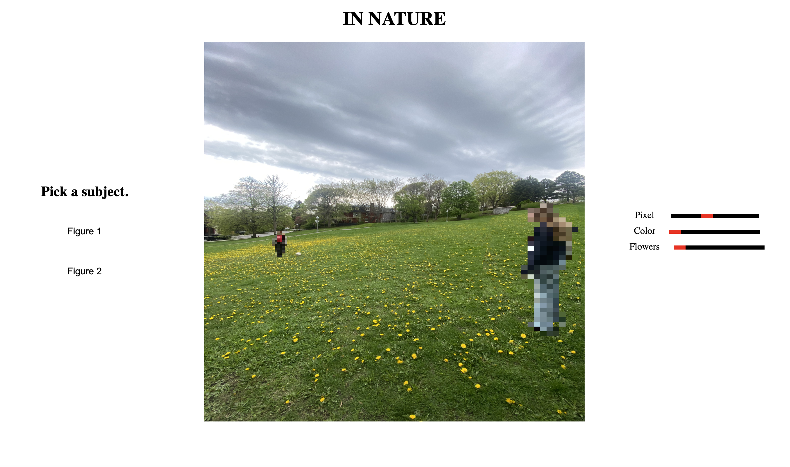
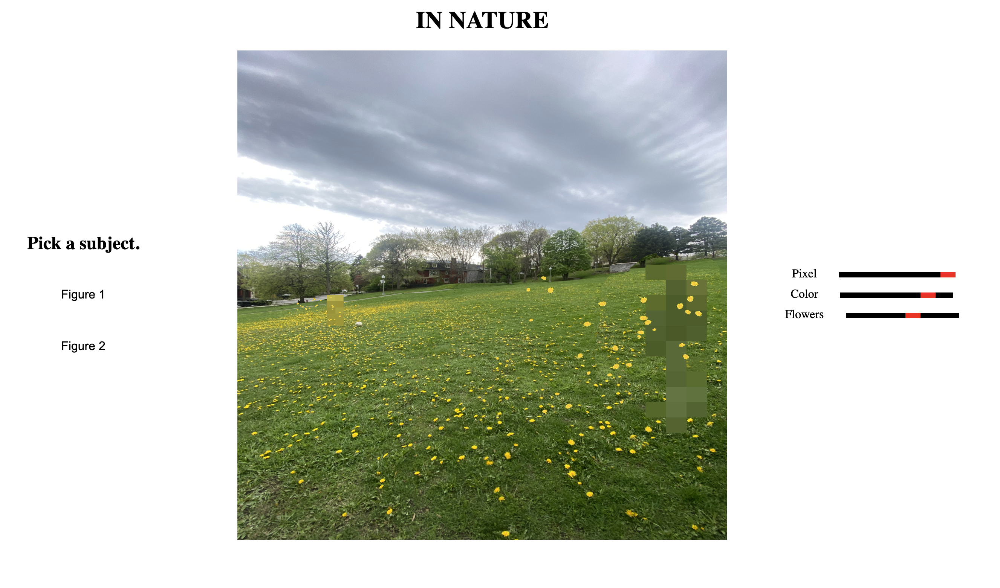

IN NATURE
TRY ITJavaScript · HTML · CSS
An interactive, web-based piece starring two figures in a field. This work asks whether they can ever truly become part of the environment around them. Adjusting pixelation, color, and overgrowth in real time, they seem closer and closer to disappearing into nature. However, is this really integration? Or just distortion made to look like it?
Key Features
- Real-time pixelation and color overlay
- Procedurally scattered flora with changeable position, size and density



Design Process
-
Ideation
Built on the ideas of Against Access, with more abstraction. Same concealment question, this time through environment.
Edited the photo by hand in Photoshop to see how far I could make the figures disappear.
-
Building
Turned my experiments into controls anyone could use.
Narrowed it down to three buttons: pixel, color, and flowers.
-
Refinement
Kept the interface simple and intuitive, with no instructions needed.
After making the edits, the final action for the user is to step back and reflect.